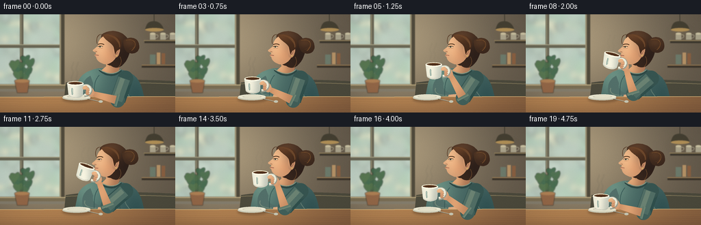
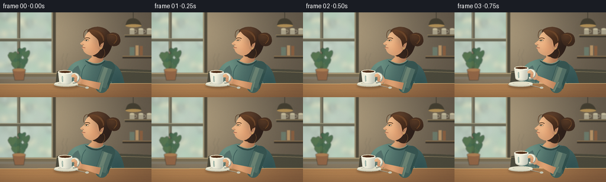

CODING AGENTS AS PIXEL WORLD MODELS
traex/GPT-6.1-Sol · motion_rationality_0003
点击播放 · 原生 RGB 像素
逐轮保存的候选
回放视频、检查图与代码变化。
每份候选均可单独播放。实际图片检查记录在下方工具轨迹中。
候选 01播放与检查图
点击播放 · 原生 RGB 像素


展开代码变化
--- 上一保存版本
+++ 本次保存版本
@@ -0,0 +1,284 @@
+"""Text-only, deterministic supersampled illustration of a person sipping coffee.
+No source images, models, or rendering engines are used.
+"""
+from pathlib import Path
+import math
+import json
+import numpy as np
+from PIL import Image, ImageDraw, ImageFilter
+import artifact_io
+
+ROOT = Path(__file__).resolve().parent
+SPEC = json.loads((ROOT / 'task_spec.json').read_text())
+W,H = SPEC['width'], SPEC['height']
+S=4
+SIZE=(W*S,H*S)
+rng=np.random.default_rng(19)
+
+def col(c):
+ return tuple(c)
+
+def bezier(points,steps=20):
+ out=[]
+ p=np.asarray(points[0],float); out.append(tuple(p))
+ for segment in points[1:]:
+ if len(segment)==2:
+ p=np.asarray(segment,float);out.append(tuple(p))
+ else:
+ a,b,c=map(lambda z:np.asarray(z,float),segment)
+ for t in np.linspace(0,1,steps+1)[1:]:
+ q=(1-t)**3*p+3*(1-t)**2*t*a+3*(1-t)*t*t*b+t**3*c
+ out.append(tuple(q))
+ p=c
+ return out
+
+def path(im, pts, fill, transform=None):
+ pp=bezier(pts)
+ if transform: pp=[transform(p) for p in pp]
+ ImageDraw.Draw(im).polygon([(round(x*S),round(y*S)) for x,y in pp],fill=fill)
+
+def line(im,pts,fill,width=1,transform=None):
+ pp=bezier(pts)
+ if transform:pp=[transform(p) for p in pp]
+ ImageDraw.Draw(im).line([(round(x*S),round(y*S)) for x,y in pp],fill=fill,width=max(1,round(width*S)),joint='curve')
+
+def ellipse(im,box,fill):
+ ImageDraw.Draw(im).ellipse(tuple(round(v*S) for v in box),fill=fill)
+
+def rect(im,box,fill):
+ ImageDraw.Draw(im).rectangle(tuple(round(v*S) for v in box),fill=fill)
+
+def shade_path(im,pts,base, lights=(), transform=None):
+ mask=Image.new('L',SIZE); path(mask,pts,255,transform)
+ yy,xx=np.mgrid[0:H*S,0:W*S].astype(np.float32); xx/=S;yy/=S
+ a=np.empty((H*S,W*S,3),np.float32); a[:]=base
+ for x,y,rx,ry,c,amp in lights:
+ g=np.exp(-((xx-x)/rx)**2-((yy-y)/ry)**2)*amp
+ a+=g[...,None]*np.asarray(c)[None,None,:]
+ layer=Image.fromarray(np.uint8(np.clip(a,0,255)))
+ im.paste(layer,(0,0),mask)
+
+def blurred_ellipse(im,box,color,blur):
+ lay=Image.new('RGBA',SIZE);ellipse(lay,box,color)
+ im.alpha_composite(lay.filter(ImageFilter.GaussianBlur(blur*S)))
+
+def mix(a,b,v):return a+(b-a)*v
+
+def smooth(t):
+ t=np.clip(t,0,1)
+ return float(t*t*(3-2*t))
+
+# Warm, softly defocused cafe interior. The window light is the key light.
+yy,xx=np.mgrid[0:H*S,0:W*S].astype(np.float32);xx/=S;yy/=S
+base=np.empty((H*S,W*S,3),np.float32)
+base[:]=(98,88,74)
+glow=np.exp(-((xx-64)/119)**2-((yy-32)/107)**2)
+base+=glow[...,None]*np.array([72,65,49])
+background=Image.fromarray(np.uint8(np.clip(base,0,255))).convert('RGBA')
+rect(background,(0,0,94,113),(133,126,109))
+rect(background,(0,0,89,102),(200,216,203))
+# Outside foliage and sunlight, seen through frosted, shallow-focus glass.
+out=Image.new('RGBA',SIZE)
+for i in range(95):
+ x=rng.uniform(-15,100);y=rng.uniform(-25,108);r=rng.uniform(3,14)
+ c=(int(rng.integers(138,176)),int(rng.integers(169,199)),int(rng.integers(145,174)),int(rng.integers(35,110)))
+ ellipse(out,(x-r,y-r,x+r,y+r),c)
+for i in range(17):
+ x=rng.uniform(0,89);y=rng.uniform(0,99);r=rng.uniform(2,7)
+ ellipse(out,(x-r,y-r,x+r,y+r),(255,242,200,130))
+out=out.filter(ImageFilter.GaussianBlur(4*S))
+mask=Image.new('L',SIZE);rect(mask,(0,0,89,102),255)
+background.paste(Image.alpha_composite(background,out),(0,0),mask)
+# Window mullions and sill.
+rect(background,(29,0,34,105),(106,102,85));rect(background,(30,0,31,105),(155,148,119))
+rect(background,(0,44,91,49),(106,104,86));rect(background,(0,44,91,45),(165,159,130))
+rect(background,(87,0,94,108),(81,75,60));rect(background,(87,0,89,106),(155,144,114))
+rect(background,(0,103,100,109),(123,111,85));rect(background,(0,103,99,104),(199,180,135))
+# Distant cafe shelves, crockery, and a warm hanging pendant.
+rect(background,(211,38,256,42),(62,57,47));rect(background,(210,38,256,39),(152,133,94))
+for x in (219,234,248):
+ rect(background,(x,28,x+8,37),(176,169,145))
+ ellipse(background,(x,26.7,x+8,29.7),(208,199,167))
+ line(background,[(x+8,30),((x+13,28),(x+13,35),(x+8,35))],(169,161,138),1)
+rect(background,(207,74,256,78),(60,53,43));rect(background,(207,74,256,75),(155,126,86))
+rect(background,(219,59,227,73),(110,124,108));rect(background,(229,56,234,73),(184,148,104))
+rect(background,(236,57,241,73),(139,97,66))
+line(background,[(225,0),(225,12)],(47,44,37),.8)
+path(background,[(212,22),((214,12),(218,10),(225,10)),((232,10),(237,15),(239,22)),(212,22)],(70,65,51))
+ellipse(background,(212,20,239,25),(182,148,90))
+blurred_ellipse(background,(210,20,241,34),(255,201,111,28),6)
+# A plant at the window on the left, as a quiet establishing detail.
+plant=Image.new('RGBA',SIZE)
+for i in range(11):
+ x=rng.uniform(17,44);y=rng.uniform(62,94)
+ line(plant,[(31,105),((30,91),(x-2,y+8),(x,y))],(74,99,69,230),.8)
+ path(plant,[(x,y+7),((x-11,y-1),(x-8,y-8),(x,y-4)),((x+8,y-11),(x+9,y-1),(x,y+7))],(64+int(i%3)*8,102+int(i%3)*5,73,235))
+path(plant,[(21,97),(43,97),(40,115),(25,115),(21,97)],(148,104,72,255))
+ellipse(plant,(21,95,43,100),(176,129,85,255))
+background.alpha_composite(plant.filter(ImageFilter.GaussianBlur(.55*S)))
+background=background.filter(ImageFilter.GaussianBlur(.55*S))
+# Banquette behind the subject.
+path(background,[(96,100),((125,94),(210,95),(256,98)),(256,130),(93,130),(96,100)],(77,75,61))
+line(background,[(95,102),((145,99),(215,100),(256,102))],(126,116,87),1.2)
+
+# All coordinates are in the final 256x144 image's space.
+def render(i):
+ t=i/SPEC['fps']
+ if t<.4: lift=0.
+ elif t<1.75:lift=smooth((t-.4)/1.35)
+ elif t<3.15:lift=1.
+ else:lift=1-smooth((t-3.15)/1.4)
+ sip=smooth((t-1.65)/.55)*(1-smooth((t-2.9)/.5))
+ im=background.copy().convert('RGB')
+ breath=.26*math.sin(t*1.8)
+ # Person: knitted sage sweater, relaxed seated posture.
+ shade_path(im,[(143,79),((129,82),(116,88),(113,102)),(108,127),(211,128),((209,110),(204,92),(190,86)),((181,81),(170,79),(163,79)),(143,79)],(71,103,99),[(127,89,26,33,(42,48,37),.85),(199,123,23,32,(-29,-27,-21),.7)])
+ # Far sleeve / relaxed forearm on the table.
+ path(im,[(132,90),((121,95),(118,107),(121,118)),((123,123),(138,125),(151,124)),(153,116),((139,115),(134,111),(136,101)),(132,90)],(83,112,106))
+ line(im,[(124,108),((121,117),(132,119),(141,119))],(118,139,122),1.2)
+ shade_path(im,[(143,118),((152,117),(159,116),(166,120)),((169,121),(177,124),(175,126)),(142,126),(143,118)],(196,146,111),[(151,119,19,8,(40,35,25),.8)])
+ line(im,[(158,120),((163,121),(168,122),(171,124))],(164,115,89),.6)
+ line(im,[(156,122),((162,123),(164,125),(165,126))],(173,123,92),.6)
+ # Knit fabric folds and fine ribbing.
+ line(im,[(145,89),((136,98),(138,110),(137,119))],(58,91,88),1.1)
+ line(im,[(176,92),((171,102),(176,118),(176,128))],(54,84,81),1.3)
+ line(im,[(182,105),((182,116),(190,118),(192,127))],(100,126,114),.9)
+ for x in np.arange(112,209,2.1):
+ line(im,[(x,124),(x-.25,129)],(56,88,84),.45)
+ # Neck shaded beneath hair and jaw.
+ head_angle=-.043*sip
+ def ht(p):
+ x,y=p; dx=x-163;dy=y-79
+ return (163+dx*math.cos(head_angle)-dy*math.sin(head_angle),79+dx*math.sin(head_angle)+dy*math.cos(head_angle)+breath)
+ shade_path(im,[(154,65),(176,61),(174,81),((171,88),(156,90),(148,82)),(155,76),(154,65)],(170,117,84),[(153,78,12,15,(62,56,40),.9)],ht)
+ # Collar edge follows the base of the neck.
+ line(im,[(145,81),((152,89),(167,93),(177,82))],(46,73,70),3)
+ line(im,[(145,80.5),((154,87),(167,90),(176,81))],(134,153,132),1.35)
+ # Hair silhouette and loosely pinned bun.
+ shade_path(im,[(148,30),((158,21),(179,22),(187,37)),((193,45),(190,64),(179,74)),((176,78),(167,80),(162,75)),((153,75),(149,64),(146,51)),(148,30)],(58,40,30),[(162,31,20,16,(48,32,18),.7),(183,60,16,19,(-16,-10,-5),.8)],ht)
+ shade_path(im,[(180,38),((190,31),(202,34),(203,45)),((205,54),(196,61),(185,55)),((181,50),(180,45),(180,38))],(59,40,29),[(189,40,12,9,(39,25,13),.65)],ht)
+ line(im,[(184,38),((198,34),(202,46),(192,53))],(121,80,43),.7,ht)
+ line(im,[(189,39),((199,41),(198,50),(189,51))],(84,53,32),.8,ht)
+ # Face in left-facing three-quarter profile, continuous anatomical silhouette.
+ face=[(151,32),((145,36),(143,41),(143,45)),((142,48),(139,49),(135.8,52)),((134.7,53.1),(135.7,54.5),(140.2,55.7)),(139.7,58.5),((137.3,59.1),(137.6,60.5),(140.3,61.8)),((140.6,66.5),(144.1,69.8),(149,71.7)),((154,74.5),(161,73.4),(167,66.2)),((172,61),(175,46),(171,38)),((163,30),(157,30),(151,32))]
+ shade_path(im,face,(201,150,111),[(146,45,14,26,(43,40,30),.9),(161,60,13,14,(18,-1,-7),.65),(169,42,10,19,(-42,-27,-16),.65)],ht)
+ # Cheek shadow, warmly lit small ear, and neck transition.
+ shade_path(im,[(165,48),((173,44),(177,49),(174,57)),((173,64),(166,66),(165,59)),(165,48)],(188,134,98),[(168,51,6,8,(38,30,22),.75)],ht)
+ line(im,[(169,50),((173,47),(174,55),(169,59)),((168,58),(171,54),(169,53))],(151,99,74),.8,ht)
+ # Hair sweeping from crown into sideburn, with restrained individual strands.
+ shade_path(im,[(150,31),((155,27),(169,29),(176,37)),((179,45),(177,51),(171,53)),(168,58),(166,48),((163,41),(155,40),(150,31))],(68,43,28),[(154,30,20,12,(45,29,16),.8)],ht)
+ for k in range(6):
+ line(im,[(150+k*2,29+k*.4),((162+k,30),(174+k*.5,38),(174+k*.15,48))],(103+k*2,68+k,40+k),.45,ht)
+ line(im,[(148,29),((140,30),(141,40),(141.7,43))],(83,53,33),.7,ht)
+ line(im,[(175,62),((179,68),(176,75),(173,77))],(112,75,44),.7,ht)
+ # Brow, eyelid, visible eye, nostril and lip details.
+ line(im,[(142.8,44.3),((146,42.3),(150,42.8),(152,44.6))],(91,62,40),1.15,ht)
+ eyeclose=.8*sip
+ # A subtle blink at start and finish; the sipping eye is relaxed but not shut.
+ blink=max(0,1-abs(t-.25)/.12,1-abs(t-4.5)/.12)
+ openness=1-max(blink,eyeclose*.65)
+ path(im,[(142.7,47.3),((145.2,45.7),(148,45.8),(150.2,47.2)),((147.6,47.8+openness),(144.3,47.9+openness),(142.7,47.3))],(230,209,175),ht)
+ # Eye iris as a small curved shape, not an oversized cartoon pupil.
+ path(im,[(145,46.5),(147,46.5),(147,48+openness*.2),(145,48+openness*.2)],(66,68,49),ht)
+ line(im,[(142.7,47.3),((145.1,45.9+eyeclose*.5),(148.1,46),(150.1,47.2))],(83,58,42),.8,ht)
+ line(im,[(143,49.1),((145.6,49.8),(148,49.7),(150,49))],(192,136,100),.45,ht)
+ line(im,[(138.6,54.1),((140,53.6),(141.3,54.4),(141.2,55.1))],(138,86,61),.6,ht)
+ line(im,[(138.5,59.7),((140.3,59.2),(141.2,59.8),(144,60))],(146,79,63),.75,ht)
+ line(im,[(140.1,61.5),((141.7,62.2),(143.5,61.9),(144.5,61.3))],(231,164,125),.7,ht)
+ # Small brass stud earring.
+ ep=ht((170.3,60.6));ellipse(im,(ep[0]-1,ep[1]-1,ep[0]+1,ep[1]+1),(206,168,89))
+ ellipse(im,(ep[0]-.6,ep[1]-.7,ep[0]+.05,ep[1]-.05),(255,225,150))
+ # Foreground tabletop, which occludes the very bottom of the seated person.
+ shade_path(im,[(0,121),(256,120),(256,144),(0,144)],(139,99,65),[(53,124,155,23,(60,47,26),.7),(245,143,84,23,(-26,-21,-10),.5)])
+ line(im,[(0,121.3),(256,120.3)],(220,184,125),.9)
+ for k in range(8):
+ y=125+k*2.7
+ line(im,[(0,y),((62,y-1),(185,y+.7),(256,y-.3))],(148+k%3*5,106+k%3*4,68),.3)
+ # Simple saucer remains planted on the table throughout the sip.
+ lay=Image.new('RGBA',SIZE)
+ ellipse(lay,(91,120,134,129),(45,31,22,75))
+ im=Image.alpha_composite(im.convert('RGBA'),lay.filter(ImageFilter.GaussianBlur(1.7*S))).convert('RGB')
+ ellipse(im,(91,118.6,132,126),(204,202,181));ellipse(im,(92,117.2,132,124),(239,235,212))
+ ellipse(im,(98,118.6,126,123),(213,210,187));ellipse(im,(100,119,124,122.4),(232,228,205))
+ # A teaspoon, with its metal catching the window light.
+ line(im,[(128,124),(146,128)],(100,93,78),1.3)
+ line(im,[(128,123.6),(145,127.6)],(217,218,198),.7)
+ ellipse(im,(144,126,150,129.5),(200,200,181))
+ # Cup position: one continuous lift, lip contact, tilt for sip, then return.
+ lip=ht((138.7,60.65))
+ pivot=(mix(122,lip[0],lift),mix(101,lip[1],lift))
+ angle=math.radians(20)*sip
+ def ct(p):
+ x,y=p
+ return (pivot[0]+x*math.cos(angle)-y*math.sin(angle),pivot[1]+x*math.sin(angle)+y*math.cos(angle))
+ # Grip and wrist rigidly travel with the cup; two-bone arm solves the elbow.
+ wrist=np.array(ct((12,15)))
+ shoulder=np.array((183,94+breath*.3))
+ L1,L2=34.,39.
+ v=wrist-shoulder; d=float(np.linalg.norm(v)); u=v/d
+ a=(L1*L1-L2*L2+d*d)/(2*d)
+ h=math.sqrt(max(0,L1*L1-a*a))
+ perp=np.array([u[1],-u[0]])
+ elbow=shoulder+a*u+h*perp
+ # Upper arm of sweater, smoothly lit and attached to the shoulder.
+ arm=Image.new('RGBA',SIZE)
+ line(arm,[tuple(shoulder),tuple(elbow)],(48,80,77,255),23)
+ ellipse(arm,(shoulder[0]-11.5,shoulder[1]-11.5,shoulder[0]+11.5,shoulder[1]+11.5),(55,85,81,255))
+ ellipse(arm,(elbow[0]-10.5,elbow[1]-10.5,elbow[0]+10.5,elbow[1]+10.5),(66,97,91,255))
+ line(arm,[(shoulder[0]-2,shoulder[1]),(elbow[0]-2,elbow[1])],(82,111,102,255),18)
+ line(arm,[(shoulder[0]-4,shoulder[1]),(elbow[0]-4,elbow[1])],(108,132,116,255),7)
+ im=Image.alpha_composite(im.convert('RGBA'),arm).convert('RGB')
+ # Exposed forearm, narrowing naturally towards the wrist.
+ fore=wrist-elbow; fn=fore/np.linalg.norm(fore); normal=np.array([-fn[1],fn[0]])
+ start=elbow+fn*3
+ p1=start+normal*6.1;p2=wrist+normal*3.5;p3=wrist-normal*3.5;p4=start-normal*6.1
+ shade_path(im,[tuple(p1),tuple(p2),tuple(p3),tuple(p4),tuple(p1)],(192,134,95),[(float((start[0]+wrist[0])/2-2),float((start[1]+wrist[1])/2),14,23,(47,42,30),.75)])
+ # Rolled cuff with three knitted bands, properly perpendicular to the forearm.
+ for j in range(3):
+ cen=elbow+fn*(j*1.1)
+ line(im,[tuple(cen-normal*9),tuple(cen+normal*9)],(116-j*9,140-j*8,122-j*7),1.8)
+ # Palm lies behind the mug handle. Fingers on the near side are drawn later.
+ shade_path(im,[(5,5),((11,3),(16,9),(16,15)),(12,20),((6,20),(3,16),(4,11)),(5,5)],(206,149,110),[(pivot[0]+8,pivot[1]+9,8,13,(31,30,22),.7)],ct)
+ # Ceramic loop handle: all geometry rotates with the vessel, including the hole.
+ line(im,[(0,4),((13,-.7),(15,18),(1,18))],(156,160,144),4.4,ct)
+ line(im,[(0,3.7),((12,0),(14,16),(1,17))],(236,235,215),3,ct)
+ # Mug body softly tapers into a rounded, shaded foot.
+ shade_path(im,[(-24,0),(-22,17),((-21,23),(-3,24),(-1,17)),(0,0),(-24,0)],(223,224,207),[(pivot[0]-16,pivot[1]+10,8,19,(30,25,22),.85),(pivot[0]-1,pivot[1]+16,8,20,(-41,-35,-29),.65)],ct)
+ line(im,[(-21,18),((-19,21),(-6,22),(-3,18))],(194,195,179),.65,ct)
+ # Rim with a visible pool of dark coffee and reflected window light.
+ path(im,[(-24,0),((-23,-4),(-2,-4),(0,0)),((-1,4),(-23,4),(-24,0))],(252,246,221),ct)
+ path(im,[(-22.2,-.05),((-21.5,-2.7),(-3.1,-2.7),(-1.7,-.05)),((-3,2.25),(-20.9,2.25),(-22.2,-.05))],(76,45,27),ct)
+ line(im,[(-21,-.3),((-16,-2),(-8,-1.9),(-4,-.9))],(150,105,57),.55,ct)
+ line(im,[(-23.8,.6),((-20.9,4),(-3.5,4),(-.3,.5))],(255,252,234),1,ct)
+ # Discreet vertical glaze mark on the mug, no lettering.
+ line(im,[(-17,7),((-17.5,11),(-17,15),(-16.5,17))],(149,175,164),1.4,ct)
+ line(im,[(-15.4,8),((-15.9,11.5),(-15.3,14),(-15.2,16))],(183,196,178),.7,ct)
+ # Thumb resting across the handle root and relaxed curled fingers.
+ shade_path(im,[(5,4),((3,3),(-.5,3.7),(-1.5,6.6)),((-2.1,9),(1.8,10.1),(4,8.2)),(7,8),(5,4)],(218,164,121),[(pivot[0]+1,pivot[1]+5,6,5,(25,24,19),.8)],ct)
+ for k in range(3):
+ y=9+k*2.8
+ path(im,[(7,y),((4,y-1),(2.7,y-.3),(3.2,y+1.2)),((4,y+2.9),(7.5,y+2.7),(9,y+1.7)),(7,y)],(222-k*5,164-k*5,121-k*4),ct)
+ line(im,[(3.9,y+1.9),((5.1,y+2.5),(7.1,y+2.4),(8.2,y+1.8))],(171,117,84),.45,ct)
+ # Very faint steam: rising continuous tendrils, not smoke clouds.
+ steam=Image.new('RGBA',SIZE)
+ steam_amount=(1-.65*lift)
+ for j in range(2):
+ bx=pivot[0]-17+j*7
+ by=pivot[1]-3
+ phase=t*1.5+j*2
+ line(steam,[(bx,by-1),((bx-3+math.sin(phase),by-6),(bx+3,by-10),(bx+math.sin(phase+1)*2,by-15)),((bx-3,by-20),(bx+2,by-23),(bx+2,by-28))],(244,238,210,int(58*steam_amount)),.65)
+ im=Image.alpha_composite(im.convert('RGBA'),steam.filter(ImageFilter.GaussianBlur(.6*S))).convert('RGB')
+ # Supersampling and a subtle warm photographic grade unify the artwork.
+ im=im.resize((W,H),Image.Resampling.LANCZOS)
+ a=np.asarray(im,dtype=np.float32)
+ yy2,xx2=np.mgrid[0:H,0:W]
+ vig=1-.095*((xx2-W*.48)/(W*.7))**2-.09*((yy2-H*.43)/(H*.86))**2
+ a=a*vig[...,None]
+ # Fixed, fine grain avoids temporal flicker.
+ grain=np.random.default_rng(52).normal(0,.38,(H,W,1))
+ return np.uint8(np.clip(a+grain,0,255))
+
+if __name__=='__main__':
+ frames=np.stack([render(i) for i in range(SPEC['frames'])])
+ artifact_io.save(frames,ROOT)
+ print('Saved',frames.shape,frames.dtype,'to',ROOT)
可观测工具轨迹
实际执行的命令与返回图片。
命令 1exit 0
/bin/bash -lc 'ls -la && cat prompt.txt && cat GENERATION_RULES.md && cat task_spec.json'
命令 2exit 0
/bin/bash -lc "cat artifact_io.py && cat player_template.html && python - <<'PY'
import PIL,numpy
print('PIL',PIL.__version__)
PY"命令 3exit 0
/bin/bash -lc "cat > generate.py <<'PY'
\"\"\"Text-only, deterministic supersampled illustration of a person sipping coffee.
No source images, models, or rendering engines are used.
\"\"\"
from pathlib import Path
import math
import json
import numpy as np
from PIL import Image, ImageDraw, ImageFilter
import artifact_io
ROOT = Path(__file__).resolve().parent
SPEC = json.loads((ROOT / 'task_spec.json').read_text())
W,H = SPEC['width'], SPEC['height']
S=4
SIZE=(W*S,H*S)
rng=np.random.default_rng(19)
def col(c):
return tuple(c)
def bezier(points,steps=20):
out=[]
p=np.asarray(points[0],float); out.append(tuple(p))
for segment in points[1:]:
if len(segment)==2:
p=np.asarray(segment,float);out.append(tuple(p))
else:
a,b,c=map(lambda z:np.asarray(z,float),segment)
for t in np.linspace(0,1,steps+1)[1:]:
q=(1-t)**3*p+3*(1-t)**2*t*a+3*(1-t)*t*t*b+t**3*c
out.append(tuple(q))
p=c
return out
def path(im, pts, fill, transform=None):
pp=bezier(pts)
if transform: pp=[transform(p) for p in pp]
ImageDraw.Draw(im).polygon([(round(x*S),round(y*S)) for x,y in pp],fill=fill)
def line(im,pts,fill,width=1,transform=None):
pp=bezier(pts)
if transform:pp=[transform(p) for p in pp]
ImageDraw.Draw(im).line([(round(x*S),round(y*S)) for x,y in pp],fill=fill,width=max(1,round(width*S)),joint='curve')
def ellipse(im,box,fill):
ImageDraw.Draw(im).ellipse(tuple(round(v*S) for v in box),fill=fill)
def rect(im,box,fill):
ImageDraw.Draw(im).rectangle(tuple(round(v*S) for v in box),fill=fill)
def shade_path(im,pts,base, lights=(), transform=None):
mask=Image.new('L',SIZE); path(mask,pts,255,transform)
yy,xx=np.mgrid[0:H*S,0:W*S].astype(np.float32); xx/=S;yy/=S
a=np.empty((H*S,W*S,3),np.float32); a[:]=base
for x,y,rx,ry,c,amp in lights:
g=np.exp(-((xx-x)/rx)**2-((yy-y)/ry)**2)*amp
a+=g[...,None]*np.asarray(c)[None,None,:]
layer=Image.fromarray(np.uint8(np.clip(a,0,255)))
im.paste(layer,(0,0),mask)
def blurred_ellipse(im,box,color,blur):
lay=Image.new('RGBA',SIZE);ellipse(lay,box,color)
im.alpha_composite(lay.filter(ImageFilter.GaussianBlur(blur*S)))
def mix(a,b,v):return a+(b-a)*v
def smooth(t):
t=np.clip(t,0,1)
return float(t*t*(3-2*t))
# Warm, softly defocused cafe interior. The window light is the key light.
yy,xx=np.mgrid[0:H*S,0:W*S].astype(np.float32);xx/=S;yy/=S
base=np.empty((H*S,W*S,3),np.float32)
base[:]=(98,88,74)
glow=np.exp(-((xx-64)/119)**2-((yy-32)/107)**2)
base+=glow[...,None]*np.array([72,65,49])
background=Image.fromarray(np.uint8(np.clip(base,0,255))).convert('RGBA')
rect(background,(0,0,94,113),(133,126,109))
rect(background,(0,0,89,102),(200,216,203))
# Outside foliage and sunlight, seen through frosted, shallow-focus glass.
out=Image.new('RGBA',SIZE)
for i in range(95):
x=rng.uniform(-15,100);y=rng.uniform(-25,108);r=rng.uniform(3,14)
c=(int(rng.integers(138,176)),int(rng.integers(169,199)),int(rng.integers(145,174)),int(rng.integers(35,110)))
ellipse(out,(x-r,y-r,x+r,y+r),c)
for i in range(17):
x=rng.uniform(0,89);y=rng.uniform(0,99);r=rng.uniform(2,7)
ellipse(out,(x-r,y-r,x+r,y+r),(255,242,200,130))
out=out.filter(ImageFilter.GaussianBlur(4*S))
mask=Image.new('L',SIZE);rect(mask,(0,0,89,102),255)
background.paste(Image.alpha_composite(background,out),(0,0),mask)
# Window mullions and sill.
rect(background,(29,0,34,105),(106,102,85));rect(background,(30,0,31,105),(155,148,119))
rect(background,(0,44,91,49),(106,104,86));rect(background,(0,44,91,45),(165,159,130))
rect(background,(87,0,94,108),(81,75,60));rect(background,(87,0,89,106),(155,144,114))
rect(background,(0,103,100,109),(123,111,85));rect(background,(0,103,99,104),(199,180,135))
# Distant cafe shelves, crockery, and a warm hanging pendant.
rect(background,(211,38,256,42),(62,57,47));rect(background,(210,38,256,39),(152,133,94))
for x in (219,234,248):
rect(background,(x,28,x+8,37),(176,169,145))
ellipse(background,(x,26.7,x+8,29.7),(208,199,167))
line(background,[(x+8,30),((x+13,28),(x+13,35),(x+8,35))],(169,161,138),1)
rect(background,(207,74,256,78),(60,53,43));rect(background,(207,74,256,75),(155,126,86))
rect(background,(219,59,227,73),(110,124,108));rect(background,(229,56,234,73),(184,148,104))
rect(background,(236,57,241,73),(139,97,66))
line(background,[(225,0),(225,12)],(47,44,37),.8)
path(background,[(212,22),((214,12),(218,10),(225,10)),((232,10),(237,15),(239,22)),(212,22)],(70,65,51))
ellipse(background,(212,20,239,25),(182,148,90))
blurred_ellipse(background,(210,20,241,34),(255,201,111,28),6)
# A plant at the window on the left, as a quiet establishing detail.
plant=Image.new('RGBA',SIZE)
for i in range(11):
x=rng.uniform(17,44);y=rng.uniform(62,94)
line(plant,[(31,105),((30,91),(x-2,y+8),(x,y))],(74,99,69,230),.8)
path(plant,[(x,y+7),((x-11,y-1),(x-8,y-8),(x,y-4)),((x+8,y-11),(x+9,y-1),(x,y+7))],(64+int(i%3)*8,102+int(i%3)*5,73,235))
path(plant,[(21,97),(43,97),(40,115),(25,115),(21,97)],(148,104,72,255))
ellipse(plant,(21,95,43,100),(176,129,85,255))
background.alpha_composite(plant.filter(ImageFilter.GaussianBlur(.55*S)))
background=background.filter(ImageFilter.GaussianBlur(.55*S))
# Banquette behind the subject.
path(background,[(96,100),((125,94),(210,95),(256,98)),(256,130),(93,130),(96,100)],(77,75,61))
line(background,[(95,102),((145,99),(215,100),(256,102))],(126,116,87),1.2)
# All coordinates are in the final 256x144 image's space.
def render(i):
t=i/SPEC['fps']
if t<.4: lift=0.
elif t<1.75:lift=smooth((t-.4)/1.35)
elif t<3.15:lift=1.
else:lift=1-smooth((t-3.15)/1.4)
sip=smooth((t-1.65)/.55)*(1-smooth((t-2.9)/.5))
im=background.copy().convert('RGB')
breath=.26*math.sin(t*1.8)
# Person: knitted sage sweater, relaxed seated posture.
shade_path(im,[(143,79),((129,82),(116,88),(113,102)),(108,127),(211,128),((209,110),(204,92),(190,86)),((181,81),(170,79),(163,79)),(143,79)],(71,103,99),[(127,89,26,33,(42,48,37),.85),(199,123,23,32,(-29,-27,-21),.7)])
# Far sleeve / relaxed forearm on the table.
path(im,[(132,90),((121,95),(118,107),(121,118)),((123,123),(138,125),(151,124)),(153,116),((139,115),(134,111),(136,101)),(132,90)],(83,112,106))
line(im,[(124,108),((121,117),(132,119),(141,119))],(118,139,122),1.2)
shade_path(im,[(143,118),((152,117),(159,116),(166,120)),((169,121),(177,124),(175,126)),(142,126),(143,118)],(196,146,111),[(151,119,19,8,(40,35,25),.8)])
line(im,[(158,120),((163,121),(168,122),(171,124))],(164,115,89),.6)
line(im,[(156,122),((162,123),(164,125),(165,126))],(173,123,92),.6)
# Knit fabric folds and fine ribbing.
line(im,[(145,89),((136,98),(138,110),(137,119))],(58,91,88),1.1)
line(im,[(176,92),((171,102),(176,118),(176,128))],(54,84,81),1.3)
line(im,[(182,105),((182,116),(190,118),(192,127))],(100,126,114),.9)
for x in np.arange(112,209,2.1):
line(im,[(x,124),(x-.25,129)],(56,88,84),.45)
# Neck shaded beneath hair and jaw.
head_angle=-.043*sip
def ht(p):
x,y=p; dx=x-163;dy=y-79
return (163+dx*math.cos(head_angle)-dy*math.sin(head_angle),79+dx*math.sin(head_angle)+dy*math.cos(head_angle)+breath)
shade_path(im,[(154,65),(176,61),(174,81),((171,88),(156,90),(148,82)),(155,76),(154,65)],(170,117,84),[(153,78,12,15,(62,56,40),.9)],ht)
# Collar edge follows the base of the neck.
line(im,[(145,81),((152,89),(167,93),(177,82))],(46,73,70),3)
line(im,[(145,80.5),((154,87),(167,90),(176,81))],(134,153,132),1.35)
# Hair silhouette and loosely pinned bun.
shade_path(im,[(148,30),((158,21),(179,22),(187,37)),((193,45),(190,64),(179,74)),((176,78),(167,80),(162,75)),((153,75),(149,64),(146,51)),(148,30)],(58,40,30),[(162,31,20,16,(48,32,18),.7),(183,60,16,19,(-16,-10,-5),.8)],ht)
shade_path(im,[(180,38),((190,31),(202,34),(203,45)),((205,54),(196,61),(185,55)),((181,50),(180,45),(180,38))],(59,40,29),[(189,40,12,9,(39,25,13),.65)],ht)
line(im,[(184,38),((198,34),(202,46),(192,53))],(121,80,43),.7,ht)
line(im,[(189,39),((199,41),(198,50),(189,51))],(84,53,32),.8,ht)
# Face in left-facing three-quarter profile, continuous anatomical silhouette.
face=[(151,32),((145,36),(143,41),(143,45)),((142,48),(139,49),(135.8,52)),((134.7,53.1),(135.7,54.5),(140.2,55.7)),(139.7,58.5),((137.3,59.1),(137.6,60.5),(140.3,61.8)),((140.6,66.5),(144.1,69.8),(149,71.7)),((154,74.5),(161,73.4),(167,66.2)),((172,61),(175,46),(171,38)),((163,30),(157,30),(151,32))]
shade_path(im,face,(201,150,111),[(146,45,14,26,(43,40,30),.9),(161,60,13,14,(18,-1,-7),.65),(169,42,10,19,(-42,-27,-16),.65)],ht)
# Cheek shadow, warmly lit small ear, and neck transition.
shade_path(im,[(165,48),((173,44),(177,49),(174,57)),((173,64),(166,66),(165,59)),(165,48)],(188,134,98),[(168,51,6,8,(38,30,22),.75)],ht)
line(im,[(169,50),((173,47),(174,55),(169,59)),((168,58),(171,54),(169,53))],(151,99,74),.8,ht)
# Hair sweeping from crown into sideburn, with restrained individual strands.
shade_path(im,[(150,31),((155,27),(169,29),(176,37)),((179,45),(177,51),(171,53)),(168,58),(166,48),((163,41),(155,40),(150,31))],(68,43,28),[(154,30,20,12,(45,29,16),.8)],ht)
for k in range(6):
line(im,[(150+k*2,29+k*.4),((162+k,30),(174+k*.5,38),(174+k*.15,48))],(103+k*2,68+k,40+k),.45,ht)
line(im,[(148,29),((140,30),(141,40),(141.7,43))],(83,53,33),.7,ht)
line(im,[(175,62),((179,68),(176,75),(173,77))],(112,75,44),.7,ht)
# Brow, eyelid, visible eye, nostril and lip details.
line(im,[(142.8,44.3),((146,42.3),(150,42.8),(152,44.6))],(91,62,40),1.15,ht)
eyeclose=.8*sip
# A subtle blink at start and finish; the sipping eye is relaxed but not shut.
blink=max(0,1-abs(t-.25)/.12,1-abs(t-4.5)/.12)
openness=1-max(blink,eyeclose*.65)
path(im,[(142.7,47.3),((145.2,45.7),(148,45.8),(150.2,47.2)),((147.6,47.8+openness),(144.3,47.9+openness),(142.7,47.3))],(230,209,175),ht)
# Eye iris as a small curved shape, not an oversized cartoon pupil.
path(im,[(145,46.5),(147,46.5),(147,48+openness*.2),(145,48+openness*.2)],(66,68,49),ht)
line(im,[(142.7,47.3),((145.1,45.9+eyeclose*.5),(148.1,46),(150.1,47.2))],(83,58,42),.8,ht)
line(im,[(143,49.1),((145.6,49.8),(148,49.7),(150,49))],(192,136,100),.45,ht)
line(im,[(138.6,54.1),((140,53.6),(141.3,54.4),(141.2,55.1))],(138,86,61),.6,ht)
line(im,[(138.5,59.7),((140.3,59.2),(141.2,59.8),(144,60))],(146,79,63),.75,ht)
line(im,[(140.1,61.5),((141.7,62.2),(143.5,61.9),(144.5,61.3))],(231,164,125),.7,ht)
# Small brass stud earring.
ep=ht((170.3,60.6));ellipse(im,(ep[0]-1,ep[1]-1,ep[0]+1,ep[1]+1),(206,168,89))
ellipse(im,(ep[0]-.6,ep[1]-.7,ep[0]+.05,ep[1]-.05),(255,225,150))
# Foreground tabletop, which occludes the very bottom of the seated person.
shade_path(im,[(0,121),(256,120),(256,144),(0,144)],(139,99,65),[(53,124,155,23,(60,47,26),.7),(245,143,84,23,(-26,-21,-10),.5)])
line(im,[(0,121.3),(256,120.3)],(220,184,125),.9)
for k in range(8):
y=125+k*2.7
line(im,[(0,y),((62,y-1),(185,y+.7),(256,y-.3))],(148+k%3*5,106+k%3*4,68),.3)
# Simple saucer remains planted on the table throughout the sip.
lay=Image.new('RGBA',SIZE)
ellipse(lay,(91,120,134,129),(45,31,22,75))
im=Image.alpha_composite(im.convert('RGBA'),lay.filter(ImageFilter.GaussianBlur(1.7*S))).convert('RGB')
ellipse(im,(91,118.6,132,126),(204,202,181));ellipse(im,(92,117.2,132,124),(239,235,212))
ellipse(im,(98,118.6,126,123),(213,210,187));ellipse(im,(100,119,124,122.4),(232,228,205))
# A teaspoon, with its metal catching the window light.
line(im,[(128,124),(146,128)],(100,93,78),1.3)
line(im,[(128,123.6),(145,127.6)],(217,218,198),.7)
ellipse(im,(144,126,150,129.5),(200,200,181))
# Cup position: one continuous lift, lip contact, tilt for sip, then return.
lip=ht((138.7,60.65))
pivot=(mix(122,lip[0],lift),mix(101,lip[1],lift))
angle=math.radians(20)*sip
def ct(p):
x,y=p
return (pivot[0]+x*math.cos(angle)-y*math.sin(angle),pivot[1]+x*math.sin(angle)+y*math.cos(angle))
# Grip and wrist rigidly travel with the cup; two-bone arm solves the elbow.
wrist=np.array(ct((12,15)))
shoulder=np.array((183,94+breath*.3))
L1,L2=34.,39.
v=wrist-shoulder; d=float(np.linalg.norm(v)); u=v/d
a=(L1*L1-L2*L2+d*d)/(2*d)
h=math.sqrt(max(0,L1*L1-a*a))
perp=np.array([u[1],-u[0]])
elbow=shoulder+a*u+h*perp
# Upper arm of sweater, smoothly lit and attached to the shoulder.
arm=Image.new('RGBA',SIZE)
line(arm,[tuple(shoulder),tuple(elbow)],(48,80,77,255),23)
ellipse(arm,(shoulder[0]-11.5,shoulder[1]-11.5,shoulder[0]+11.5,shoulder[1]+11.5),(55,85,81,255))
ellipse(arm,(elbow[0]-10.5,elbow[1]-10.5,elbow[0]+10.5,elbow[1]+10.5),(66,97,91,255))
line(arm,[(shoulder[0]-2,shoulder[1]),(elbow[0]-2,elbow[1])],(82,111,102,255),18)
line(arm,[(shoulder[0]-4,shoulder[1]),(elbow[0]-4,elbow[1])],(108,132,116,255),7)
im=Image.alpha_composite(im.convert('RGBA'),arm).convert('RGB')
# Exposed forearm, narrowing naturally towards the wrist.
fore=wrist-elbow; fn=fore/np.linalg.norm(fore); normal=np.array([-fn[1],fn[0]])
start=elbow+fn*3
p1=start+normal*6.1;p2=wrist+normal*3.5;p3=wrist-normal*3.5;p4=start-normal*6.1
shade_path(im,[tuple(p1),tuple(p2),tuple(p3),tuple(p4),tuple(p1)],(192,134,95),[(float((start[0]+wrist[0])/2-2),float((start[1]+wrist[1])/2),14,23,(47,42,30),.75)])
# Rolled cuff with three knitted bands, properly perpendicular to the forearm.
for j in range(3):
cen=elbow+fn*(j*1.1)
line(im,[tuple(cen-normal*9),tuple(cen+normal*9)],(116-j*9,140-j*8,122-j*7),1.8)
# Palm lies behind the mug handle. Fingers on the near side are drawn later.
shade_path(im,[(5,5),((11,3),(16,9),(16,15)),(12,20),((6,20),(3,16),(4,11)),(5,5)],(206,149,110),[(pivot[0]+8,pivot[1]+9,8,13,(31,30,22),.7)],ct)
# Ceramic loop handle: all geometry rotates with the vessel, including the hole.
line(im,[(0,4),((13,-.7),(15,18),(1,18))],(156,160,144),4.4,ct)
line(im,[(0,3.7),((12,0),(14,16),(1,17))],(236,235,215),3,ct)
# Mug body softly tapers into a rounded, shaded foot.
shade_path(im,[(-24,0),(-22,17),((-21,23),(-3,24),(-1,17)),(0,0),(-24,0)],(223,224,207),[(pivot[0]-16,pivot[1]+10,8,19,(30,25,22),.85),(pivot[0]-1,pivot[1]+16,8,20,(-41,-35,-29),.65)],ct)
line(im,[(-21,18),((-19,21),(-6,22),(-3,18))],(194,195,179),.65,ct)
# Rim with a visible pool of dark coffee and reflected window light.
path(im,[(-24,0),((-23,-4),(-2,-4),(0,0)),((-1,4),(-23,4),(-24,0))],(252,246,221),ct)
path(im,[(-22.2,-.05),((-21.5,-2.7),(-3.1,-2.7),(-1.7,-.05)),((-3,2.25),(-20.9,2.25),(-22.2,-.05))],(76,45,27),ct)
line(im,[(-21,-.3),((-16,-2),(-8,-1.9),(-4,-.9))],(150,105,57),.55,ct)
line(im,[(-23.8,.6),((-20.9,4),(-3.5,4),(-.3,.5))],(255,252,234),1,ct)
# Discreet vertical glaze mark on the mug, no lettering.
line(im,[(-17,7),((-17.5,11),(-17,15),(-16.5,17))],(149,175,164),1.4,ct)
line(im,[(-15.4,8),((-15.9,11.5),(-15.3,14),(-15.2,16))],(183,196,178),.7,ct)
# Thumb resting across the handle root and relaxed curled fingers.
shade_path(im,[(5,4),((3,3),(-.5,3.7),(-1.5,6.6)),((-2.1,9),(1.8,10.1),(4,8.2)),(7,8),(5,4)],(218,164,121),[(pivot[0]+1,pivot[1]+5,6,5,(25,24,19),.8)],ct)
for k in range(3):
y=9+k*2.8
path(im,[(7,y),((4,y-1),(2.7,y-.3),(3.2,y+1.2)),((4,y+2.9),(7.5,y+2.7),(9,y+1.7)),(7,y)],(222-k*5,164-k*5,121-k*4),ct)
line(im,[(3.9,y+1.9),((5.1,y+2.5),(7.1,y+2.4),(8.2,y+1.8))],(171,117,84),.45,ct)
# Very faint steam: rising continuous tendrils, not smoke clouds.
steam=Image.new('RGBA',SIZE)
steam_amount=(1-.65*lift)
for j in range(2):
bx=pivot[0]-17+j*7
by=pivot[1]-3
phase=t*1.5+j*2
line(steam,[(bx,by-1),((bx-3+math.sin(phase),by-6),(bx+3,by-10),(bx+math.sin(phase+1)*2,by-15)),((bx-3,by-20),(bx+2,by-23),(bx+2,by-28))],(244,238,210,int(58*steam_amount)),.65)
im=Image.alpha_composite(im.convert('RGBA'),steam.filter(ImageFilter.GaussianBlur(.6*S))).convert('RGB')
# Supersampling and a subtle warm photographic grade unify the artwork.
im=im.resize((W,H),Image.Resampling.LANCZOS)
a=np.asarray(im,dtype=np.float32)
yy2,xx2=np.mgrid[0:H,0:W]
vig=1-.095*((xx2-W*.48)/(W*.7))**2-.09*((yy2-H*.43)/(H*.86))**2
a=a*vig[...,None]
# Fixed, fine grain avoids temporal flicker.
grain=np.random.default_rng(52).normal(0,.38,(H,W,1))
return np.uint8(np.clip(a+grain,0,255))
if __name__=='__main__':
frames=np.stack([render(i) for i in range(SPEC['frames'])])
artifact_io.save(frames,ROOT)
print('Saved',frames.shape,frames.dtype,'to',ROOT)
PY
python generate.py"命令 4exit 1
/bin/bash -lc "python - <<'PY'
from pathlib import Path
import numpy as np
from PIL import Image
p=Path('.')
x=np.load('pixels.npz')['pixels']
assert x.shape==(144,256,20)
fs=sorted((p/'frames').glob('*.png'))
assert len(fs)==20
assert all(Image.open(f).size==(256,144) and Image.open(f).mode=='RGB' for f in fs)
assert all((p/f).exists() for f in ['generate.py','pixels.npz','index.html','inspection.png','transition_check.png'])
print('Validated: 20 RGB frames, 256Ã144, 4 fps / 5 seconds; all required artifacts present.')
PY
command -v ffmpeg"保存候选 1 份；完成命令 4 次；可验证图片返回 0 张。原始 API 响应与完整日志保留在本地。